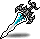
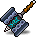
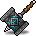
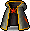

時間神殿各路
回憶之路Memory Lane
LV90-101
解鎖：任務從90級開啟
- 經驗≒雙刀龍（低於蛋龍/骨龍）
- 綠祭司掉60%頭敏、綠隊長掉60%頭智
- 怪物抗毒/抗雷、血量較低；面板較高的法師無需魔力激發即可秒怪
悔恨之路Road of Regrets
LV103-116
解鎖：需完成全部綠圖任務+103級
- 怪物弱火/弱雷、經驗=骨龍、火毒/火槍主場常駐圖(冰雷也可以利用弱雷開電)
- 藍神官掉60%耳敏、藍守護兵掉10%耳智、藍隊長掉100級盜賊拳套，進悔恨4/5需LV113/116)
忘卻之路Road to Oblivion
LV120-131
解鎖：需完成全部綠/藍圖任務+120級
- 經驗=1.5倍骨龍、血量=2倍神木怪物、怪物新增弱冰(高等冰雷有機會一刀秒)、移除強火。
- 掉落基本不值錢，忘卻之路4/6為熱門圖(需LV128/131)，6為5的隱藏圖，長得和4一樣(練到131多1選擇)。
破碎的迴廊Broken Corridor
LV135
解鎖：製作混沌之球+135級
- BUFF機必須升到對應等級，並完成各通道任務才能進圖。
- 組隊系統可共享進度，Boss擊殺僅需摸到即可完成任務。
- (到達忘卻4需要LV128，到達忘卻5隱藏圖須LV131)
強化系列共通材料
每做一件強化系列武器或防具都要：三個 BOSS 的信物各 1、該部位的時間碎片，以及一件未強化的 LV110 同部位裝備。
素材LV110武器神木村製作/闇黑龍王掉落 未強化
強化系列武器與防具
10/05更新: 矛 比較慢(9) --> 慢(8) 暫定，疑似有顯示BUG LV110 LV120矛實測可能都是[比較慢]，但遊戲內顯示[慢]。
武器
劍士
Reverse Executioners
單手劍攻速 快(5)
攻擊力 +108
- 需求
- 力量 340
- 每次升級
- 攻擊力 0～2，力量 1～2，敏捷 0～1

Reverse Nibleheim
雙手劍攻速 普通(6)
攻擊力 +110
- 需求
- 力量 370
- 每次升級
- 攻擊力 0～2，力量 1～2，敏捷 0～1

Reverse Bardiche台版：強化斷蝕斧
單手斧攻速 普通(6)
攻擊力 +108
- 需求
- 力量 350
- 每次升級
- 攻擊力 0～2，力量 1～2，敏捷 0～1
Reverse Tabarzin
雙手斧攻速 普通(6)
攻擊力 +112
- 需求
- 力量 370
- 每次升級
- 攻擊力 0～2，力量 1～2，敏捷 0～1

Reverse Allargando
單手棍攻速 普通(6)
攻擊力 +108
- 需求
- 力量 290
- 每次升級
- 攻擊力 0～2，力量 1～2，敏捷 0～1

Reverse Bellocce
雙手棍攻速 慢(7)
攻擊力 +112
- 需求
- 力量 370
- 每次升級
- 攻擊力 0～2，力量 1～2，敏捷 0～1
攻擊力 +112
- 需求
- 力量 370
- 每次升級
- 攻擊力 0～2，力量 1～2，敏捷 0～1
攻擊力 +112
- 需求
- 力量 370
- 每次升級
- 攻擊力 0～2，力量 1～2，敏捷 0～1
法師
Reverse Enreal Tear
短杖攻速 普通(6)
魔攻 +133
- 需求
- 智力 355，幸運 120
- 每次升級
- 魔攻 1～4，智力 1～2，幸運 0～1
Reverse Aeas Hand台版：強化冰輪權杖
長杖攻速 更慢(9)
魔攻 +135
- 需求
- 智力 363，幸運 123
- 每次升級
- 魔攻 1～4，智力 1～2，幸運 0～1
弓箭手
Reverse Engaw台版：強化驚雷弓
弓攻速 普通(6)
攻擊力 +105，速度 +12
- 需求
- 力量 125，敏捷 305
- 每次升級
- 攻擊力 0～2，敏捷 1～2，力量 0～1
Reverse Black Beauty
弩攻速 普通(6)
攻擊力 +108，速度 +12
- 需求
- 力量 120，敏捷 330
- 每次升級
- 攻擊力 0～2，敏捷 1～2，力量 0～1
盜賊
攻擊力 +105
- 需求
- 力量 75，敏捷 160
- 每次升級
- 攻擊力 0～2，幸運 1～2，力量 0～1
Reverse Killic台版：強化斬首刃
拳刃攻速 快(4)
攻擊力 +103
- 需求
- 敏捷 160，幸運 290
- 每次升級
- 攻擊力 0～2，幸運 1～2，敏捷 0～1
攻擊力 +54，幸運 +8，迴避 +8
- 需求
- 敏捷 160，幸運 350
- 每次升級
- 攻擊力 0～2，幸運 1～2，敏捷 0～2？
海盜
攻擊力 +82
- 需求
- 力量 330，敏捷 120
- 每次升級
- 攻擊力 0～2，敏捷 1～2，力量 0～1
Reverse Blindness
火槍攻速 快(5)
攻擊力 +82
- 需求
- 力量 120，敏捷 335
- 每次升級
- 攻擊力 0～2，敏捷 1～2，力量 0～1
防具 可升級 3 次
劍士
力量 +6
- 需求
- 力量 330
- 每次升級
- 力量 0～1，敏捷 0～1，MaxHP 10～20
力量 +8，敏捷 +7，命中 +3
- 需求
- 力量 370
- 每次升級
- 力量 0～1，敏捷 0～1，迴避 1～2
力量 +6，敏捷 +4，MaxMP +25
- 需求
- 力量 390
- 每次升級
- 力量 0～1，敏捷 0～1，命中 1～2
力量 +5，敏捷 +3，命中 +1
- 需求
- 力量 390
- 每次升級
- 力量 0～1，敏捷 0～1，速度 0～1，跳躍 0～1
法師
智力 +6，幸運 +5，MaxMP +25
- 需求
- 智力 368，幸運 123
- 每次升級
- 智力 0～1，幸運 0～1，MaxHP 5～10，MaxMP 5～10
Reverse Myst Blue台版：伊克雷帝奧丁神袍
套服
智力 +8，幸運 +4，MaxMP +50
- 需求
- 智力 355，幸運 120
- 每次升級
- 智力 0～1，幸運 0～1，迴避 1～2
Reverse Hermosa台版：伊克雷帝勇士手套
手套
智力 +5，幸運 +5，MaxMP +15
- 需求
- 智力 368，幸運 123
- 每次升級
- 智力 0～1，幸運 0～1，魔攻 0～1
Reverse Cabatina台版：伊克雷帝奧丁鞋
鞋子
智力 +4，幸運 +4，魔攻 +1
- 需求
- 智力 368，幸運 123
- 每次升級
- 智力 0～1，幸運 0～1，速度 0～1，跳躍 0～1
弓箭手
敏捷 +6，力量 +3，MaxHP +30
- 需求
- 敏捷 370
- 每次升級
- 敏捷 0～1，力量 0～1，MaxHP 20～30
敏捷 +8，力量 +6，迴避 +3
- 需求
- 敏捷 370
- 每次升級
- 敏捷 0～1，力量 0～1，迴避 1～3
敏捷 +6，力量 +5，MaxMP +30
- 需求
- 敏捷 340
- 每次升級
- 敏捷 0～1，力量 0～1，MaxHP 5～10
敏捷 +5，力量 +3，迴避 +1
- 需求
- 敏捷 370
- 每次升級
- 敏捷 0～1，力量 0～1，速度 0～1，跳躍 0～1
盜賊
幸運 +5，敏捷 +4，MaxMP +30
- 需求
- 敏捷 160，幸運 300
- 每次升級
- 幸運 0～1，敏捷 0～1，力量 0～1，MaxHP 20～30
幸運 +7，敏捷 +5，迴避 +4
- 需求
- 敏捷 160，幸運 300
- 每次升級
- 幸運 0～1，敏捷 0～1，力量 0～1，迴避 1～3
幸運 +6，敏捷 +6，MaxMP +30
- 需求
- 敏捷 160，幸運 300
- 每次升級
- 幸運 0～1，敏捷 0～1，力量 0～1，MaxHP 5～10
幸運 +4，敏捷 +4，迴避 +1
- 需求
- 敏捷 160，幸運 300
- 每次升級
- 幸運 0～1，敏捷 0～1，力量 0～1，速度 0～1，跳躍 0～1
海盜
力量 +5，敏捷 +5
- 需求
- 力量 120，敏捷 120
- 每次升級
- 力量 0～1，敏捷 0～1，MaxHP 10～20
力量 +7，敏捷 +7，MaxHP +30
- 需求
- 力量 120，敏捷 120
- 每次升級
- 力量 0～1，敏捷 0～1，迴避 1～3
力量 +5，敏捷 +5，MaxHP +20
- 需求
- 力量 120，敏捷 120
- 每次升級
- 力量 0～1，敏捷 0～1，MaxHP 5～10
力量 +4，敏捷 +4，迴避 +1
- 需求
- 力量 120，敏捷 120
- 每次升級
- 力量 0～1，敏捷 0～1，速度 0～1，跳躍 0～1
強化 → 永恆武器
永恆(Timeless)和強化(Reverse)的差異是基礎數值攻擊力力多2 / 魔法攻擊力力多5，且可以再多成長2階段，要粉豆版本才會開放。
其他神殿裝備
金花草腰帶 Golden Clover Belt
全職業腰帶LV160卷數 3
全屬+15，物魔攻+1，物魔防+150
取得：由 Raid Boss 粉豆掉落
盾牌耳環 Timeless Earrings台版：永恆耳環
全職業耳環LV120卷數 5
命中率+3，MaxMP+30
每次升級：四屬 0～1，MaxHP 5～20
永恆月光服 Timeless Moonlight台版：永恆月光披風
全職業披風LV120卷數 5
物防+55，魔防+60
每次升級：四屬 0～1，速度 0～2，跳躍 0～1
粉豆標記 Pink Bean Mark
全職業臉飾LV160卷數 3
攻擊力+5，魔法攻擊力+10
被封印的永恆墜飾 Locked Timeless Pendant台版：被封印的永恆吊墜
全職業項鍊LV30卷數 0
物魔防+30，迴避+5
永恆寒冰盾 Timeless Kite Shield台版：永恆勇士盾牌
劍士盾牌LV120，力量 370卷數 7
力+7，敏+5，迴+5，物防+100，魔防+35
每次升級：力/敏 0～1，物防 5~10
永恆魔光盾 Timeless Prelude台版：永恆雷帝奧丁盾牌
法師盾牌LV 120，智力 368，幸運 120卷數 7
智力+5，物防+60，魔防+110
每次升級：智/幸 0～1，物防 5~10
永恆迷蹤盾 Timeless List台版：永恆迷蹤盾牌
盜賊盾牌LV 120，敏捷 160，幸運 300卷數 7
幸運+5，物防+84
每次升級：力/敏/幸 0～1，物防 5~10
其他 BOSS 裝備
白色腰帶 White Belt
全職業腰帶LV25卷數 3
全屬+1，物/魔防+10，迴避+3
取得：仙人娃娃掉落/武陵道場500分兌換
黃色腰帶 Yellow Belt
全職業腰帶LV35卷數 3
全屬+2，物/魔防+20，迴避+6
取得：仙人娃娃掉落/武陵道場3,500分兌換
藍色腰帶 Blue Belt
全職業腰帶LV45卷數 3
全屬+3，物/魔防+30，迴避+9
取得：武陵道場8,000分兌換
紅色腰帶 Red Belt
全職業腰帶LV60卷數 3
全屬+4，物/魔防+40，迴避+12
取得：武陵道場兌換
異界靈魂 Soul of the Otherworld
全職業臉飾LV100卷數 5
全屬+2，魔防+5，命/迴+1，速+1，HP/MP+150
取得：普通拉圖斯掉落
發條鐘 Clockwork Clock
全職業肩膀LV80卷數 3
全屬+2，HP/MP+200
取得：普通拉圖斯掉落
拉圖斯腰帶 Papulatus Belt
全職業腰帶LV100卷數 3
全屬+1，物防+15
取得：普通拉圖斯掉落
殘暴炎魔頭盔 Zakum's Helmet
全職業頭盔LV50卷數 10
全屬+15，命中/迴避+20，物/魔防+150
取得：殘暴炎魔掉落
殘暴炎魔戒指 Zakum's XX Ring
全職業戒指LV80卷數 1
單屬+1(隨機)
取得：殘暴炎魔掉落
次元耳環 Earring of Dimension
全職業耳環LV120卷數 5
全屬性+2，魔防+45，HP/MP+150
取得：困難拉圖斯掉落
拉圖斯記號 Papulatus Mark台版：拉圖斯標記
全職業眼飾LV130卷數 3
全屬性+3，命/迴+3，魔防+20，HP/MP+200
取得：困難拉圖斯掉落
楓葉戰士盾牌 Maple Warrior Shield台版：楓葉戰盾
劍士盾牌LV64卷數 10
力量+2，物防+54，魔防+22
取得：一周年活動商店
楓之谷法師盾牌 Maple Magician Shield台版：楓葉法盾
法師盾牌LV64卷數 10
智力+2，物防+31，魔防+51
取得：一周年活動商店
楓之谷希夫茲盾牌 Maple Thief Shield台版：楓葉護腕
盜賊盾牌LV64卷數 10
幸運+2，物防+40，魔防+10
取得：一周年活動商店

楓葉披風 Maple Cape
全職業披風LV70卷數 5
物防+23，魔防+28，速度+10，跳躍力+5
取得：一周年活動商店
楓葉 Maple Leaf
全職業臉飾LV0卷數 7
單屬+3(自選)
取得：一周年活動商店
楓葉耳環 Maple Earrings
全職業耳環LV70卷數 5
全屬+1，魔防+50，HP/MP+25
取得：一周年活動商店
闇黑龍王項鍊 Horntail Necklace
全職業項鍊LV120卷數 3
全屬+7，物/魔防+108，迴避+24
取得：闇黑龍王掉落
闇黑龍王的翅膀 Horntail Wings台版：闇黑龍王披風
全職業披風LV120卷數 5
全屬+6，物防+78，魔防+85
取得：闇黑龍王掉落
青龍盾牌 Blue Dragon Shield台版：藍龍盾
劍士盾牌LV110，力量 340卷數 7
力量+7，敏捷+4，物防+78，魔防+30
取得：闇黑龍王掉落
染上毒霧的肩章 Contaminated Shoulder Epaulets
全職業肩膀LV110卷數 3
全屬+6，HP+250，MP+250
取得：艾畢奈亞掉落
沉霜之霧腰帶 Frost Mist Belt
全職業腰帶LV110卷數 3
全屬+5，HP+200，物防+40，魔防+30
取得：艾畢奈亞掉落
艾畢奈亞的戒指 Ephenia's Ring
全職業戒指LV70卷數 2
全屬+2
取得：艾畢奈亞掉落
狗鼻 Doggy Mouth
全職業臉飾LV130卷數 3
全屬+4，物魔攻+1，物防+1，迴+1
取得：黑道長老掉落
櫻花徽章 Sakura's Crest
全職業肩膀LV130卷數 3
全屬+4，魔防+30，迴+15，跳+10
取得：黑道長老掉落
武公的手套 Mu Gong’s Gloves
未來式/韓服手套LV120卷數 0
全屬+20，攻魔+10，物防+90
取得：武陵道場兌換，有期限
發光的亞泰爾耳環 Glittering Altaire Earrings台版：閃耀的阿爾泰爾耳環
未來式/韓服耳環LV50卷數 5
全屬+0~3
取得：舊版毒霧森林組隊任務
阿爾泰爾耳環 Altaire Earrings
未來式/韓服耳環LV50卷數 5
全屬+0~2
取得：舊版毒霧森林組隊任務
煉金術士的戒指 Alchemist's Ring
未來式/韓服戒指LV10卷數 1
全屬+1
取得：疑似要蒐集橡皮擦(來自轉蛋?)
相關卷軸與煉金術士之石的機率
煉金術士之石 Stone of Alchemist
調整「煉金術士戒指」當前能力值，使其變得更好或更壞。
戒指擁有的 STR / DEX / INT / LUK 將根據各自的機率上升、維持或下降，但能力值無法低於 0，成功率 60%。
能力值變動機率：
• +2 (18.279%)
• +1 (22.241%)
• 無變化 (21.170%)
• -1 (15.779%)
• -2 (9.214%)
• -3 (4.204%)
• -4 (3.420%)
• -5 (5.689%)
混沌卷軸60% Chaos Scroll 60%
裝備所擁有的 攻擊力 / 魔力 / STR / DEX / INT / LUK / 最大HP / 最大MP 的變動機率
• +5（0.99%）
• +4（1.98%）
• +3（10.21%）
• +2（15.87%）
• +1（19.31%）
• +0（18.38%）
• -1（13.7%）
• -2（8.0%）
• -3（3.65%）
• -4（2.97%）
• -5（4.94%）
• 最大 HP / MP 每次變動為 10
驚訝的混沌卷軸60% Miraculous Chaos Scroll 60%
裝備所擁有的 攻擊力 / 魔力 / STR / DEX / INT / LUK / 最大HP / 最大MP 的變動機率
• +6（0.99%）
• +4（1.98%）
• +3（10.21%）
• +2（15.87%）
• +1（19.31%）
• +0（18.38%）
• -1（13.7%）
• -2（8.0%）
• -3（3.65%）
• -4（2.97%）
• -6（4.94%）
• 最大 HP / MP 每次變動為 10
資料整理自楓情報 Artale 時間神殿頁（內容與原頁相同，原頁參考資料見上方「參考資料」）。數字可能與遊戲內不同，請自行核對。